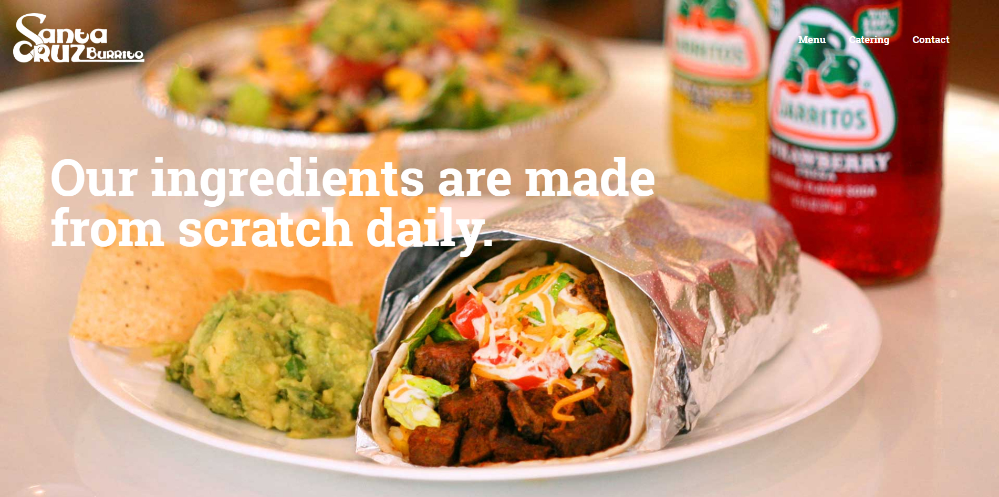
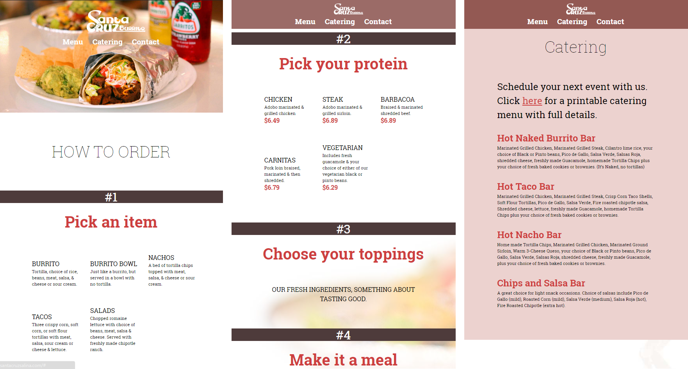

Local Burrito Bar
Santa Cruz Burrito was in need of a website after their previous site, built from a template, became neglected until the domain and hosting expired. The local business reached out to me to craft a website reflecting the identity and atmosphere of the restaurant.
The design criteria for the site was to have simple navigation with easy access to the menu, catering options, and contact information. Because Santa Cruz is a "choose your own ingredients" restaurant, the menu had to be easy to follow and guide a customer through the steps of ordering. Visual elements of the restaurant such as the wall mounted bicycles are subtly presented, and the essential food photography was shot on site to echo the experience of eating at Santa Cruz.
On technical aspects of the site, the navigation menu is always visible and unobtrusive, with media queries to change the position of the links from the right side to the center under the logo. A flexible grid allows the content to fit within a full range of displays, with changes in font size and column width taking effect based on the size of the window.
All in all, the site accomplished exactly what the restaurant needed; a simple reference guide to the basic information about the menu and locale that also expressed itself visually as a fresh local business.